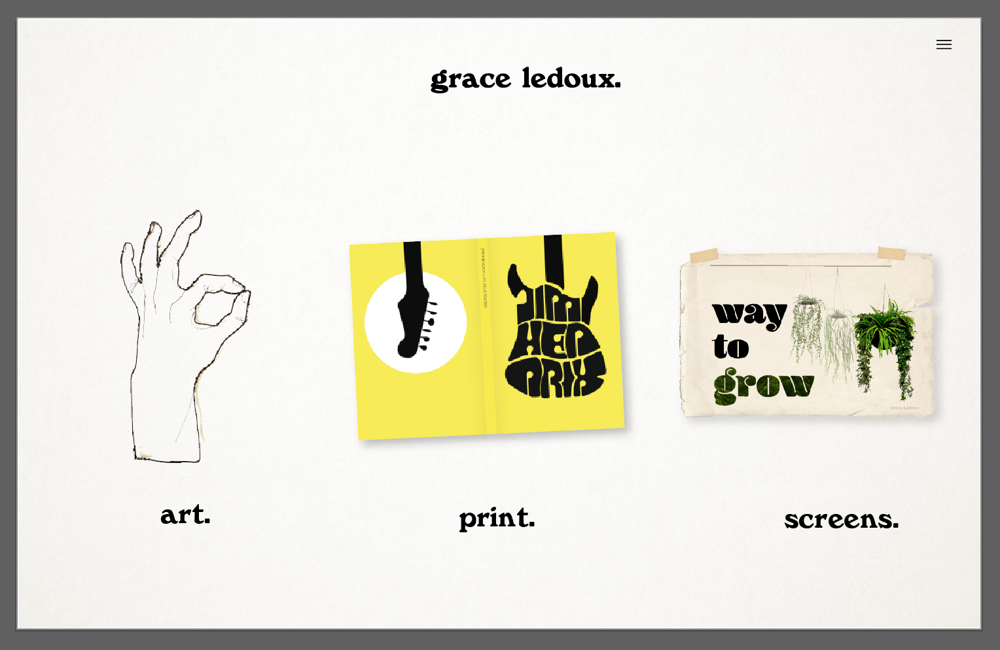

APRIL 5, 2018
Thinking Navigation
This week, I've been thinking about structure and layout. Basically, I circled back around from my design thinking last week to focus on the point of this project. This is a portfolio site, so there should probably be as few barriers as possible between when you first land on the site and when you start seeing my work. It's always annoying when you have to follow a convoluted link trail to reach your destination on a website.
At the same time, I do want to divide my work into three basic categories (with short, punchy names I'm still trying to decide on): art projects, graphic design for screen platforms, and graphic design for print/physical products.
So my super basic flow goes something like:
- Arrive on site and see my name and maybe a very short tagline of who I am and what I do
- Clearly and immediately have choices of the three galleries
- Follow the link to the gallery of your choice
- See the work in that category, multiple pieces at a time for easy browsing
- Have the ability to go deeper and click on a certain piece to be taken to that piece's page, with more pictures, description, etc.
(The gray borders on all of these pics are just Illustrator's background)
So this was my initial layout for the landing page, figuring it would cut out the possibly unneccesary step of having a pretty home page and get you straight to looking at my work. I see what I was thinking, but this feels like you're landing straight on a menu instead of being told who I am or getting a feel for the site at all. Also, I threw in the hamburger menu, but with these three links (the pictures would be links to those galleries) right here, what else would you use that menu for?
Another iteration of that idea, this time assuming there would just be those three images of projects on the page and these orange circles would come up over them when you hover. Not the clearest.
So I scrapped that and revisited my flow I outlined in that list. Here's what I came up with:
I think a compromise to my issue of whether or not to have a home page could be solved with something like this, that acts both as a nice home/landing page, and also incorporates my work so you immediately start to get a feel for what I do:
I'm imagining making this page interactive, hopefully by letting you kind of shuffle those pictures around and take a peek. This menu structure, simply and clearly at the top of every page, sits better with me than a hamburger menu: I like the idea that you always know exactly where you are on the site, and where else you could be.
It's hard to see in these screenshots, but I also want to have a little footer on each page with a snazzy copyright claim and my email, so 1) I don't really need a whole other "contact" page (seeing as email is the only way to contact me!) and 2) it's always right there and readily available, so if you're maybe an employer looking through a gallery and you decide you're into it, you don't have to go hunting to figure out how to get in touch.

This is what each gallery would look like (this example would be after you clicked "art" at the top). Yes, it's a bit expected and maybe boring, but the images could be nice and big, easily scrolled through, and provide a title and little snippet of info when you hover:
Then if you're interested, you could click on a picture and be taken to that piece's own page, with another little slide show of more photos of that project, and a more detailed thorough description talking about material, assignment, process, etc.
I think this site structure/flow seems to be pretty solid. While this design I've sketched out is pretty nice, it's still a bit expected, and I feel like I only like it because I've seen sites like this so many times before. Next up is to start thinking a bit outside the box (the color filled box when you hover over an image) and try to make it more my own. That being said, I think this basic layout and structure leaves room for some creative coding, with some moments of delight maybe found in transitions between pages, microinteractions, etc.
And mobile! I need to sketch for mobile! On the to-do list.